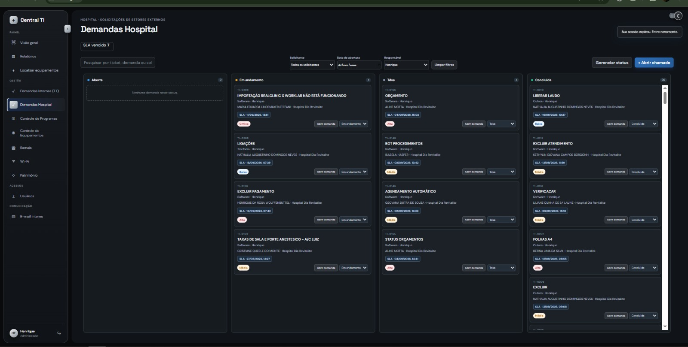

Sistema de gestão interna
Central TI
Plataforma de gestão desenvolvida para o Hospital Dia Revitalite, com demandas, equipamentos, ramais, Wi-Fi e patrimônio em um só lugar.
- Painel com visão geral de demandas, alertas e mensagens
- Gestão de chamados por status, prioridade e responsável
- Controle de equipamentos, programas e patrimônio
- Comunicados internos e e-mail integrado à equipe